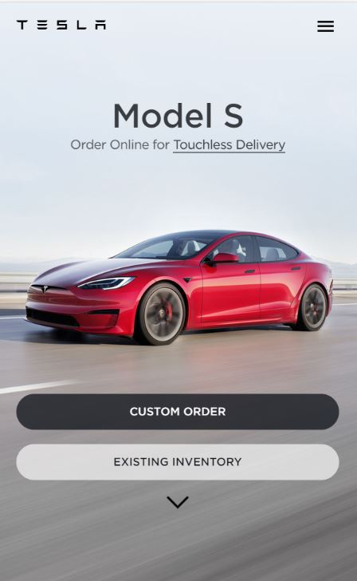

The Rule of thirds
Tesla
In this picture the rule of thirds is applying by placing a simple grid overlay (divided equally into thirds, both horizontally and vertically) on the picture of the car. This makes a grid of nine equal-shaped boxes. The car is placed in one of the "sweet spots" where the eye will automatically fall towards the four intersection points
Repetition
Canva
The principle of repetition simply means the reusing of the same or similar elements throughout your design. In this website they use this principle by using the sema boxes for "Instagram posts" This repetition brings a clear sense of unity, consistency, and cohesiveness

Contrast
Elegant Themes
Contrast refers to the arrangement of opposite elements and effects. For example, in this website we have a strong constrast in light and dark colors, smooth and rough textures, large and small shapes.